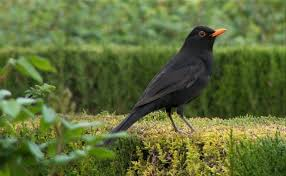
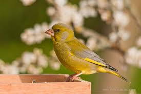
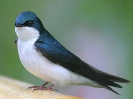
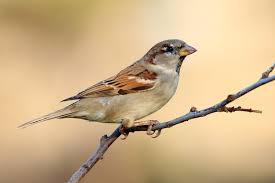

AVES EN JARDINES URBANOS
|  |  |  |  |
|---|
Aquí expongo una breve descripción de las aves mas comunes que se pueden encontrar en los entornos urbanos y mas concretamente en los árboles de mi terraza. Es bien sabido que conformen se destruye habitat, los animales se ven obligados a irrumpir en las zonas pobladas e irremediablemente adaptarse a éstas. Sin embargo, la pregunta clave de este artículo sería ¿ qué les empuja a adentrarse en las zonas urbanas que se encuentran a escasos metros del campo o del bosque?
Raquel Simó. 14-02-2021MIRLO
El ave de los mil tonos. Es un ave omnivora que antaño era migratoria. En la naturaleza tienden a nidificar en arbustos, matorrales...etc
La pareja de mirlos que revoloteaba por mi casa acabó haciendo su nido en el ficus de mi terraza; no es una zona de trafico
pero si de trasiego frecuente de personas, mi terraza colinda con la de mi vecina quien tiene dos perros bastante molestos y agresivos,
y yo por mi parte tengo una gata que siempre está encaramada al árbol.
A fecha de hoy sigo sin saber qué les llevó a hacer el nido ahí teniendo el campo
a escasos 5 minutos andando (volando serán unos 30 segundos). A mediados de junio iban por el suelo tres hembras cuyo padre era el único que las alimentaba
y lo hacía sin descanso. Todos los días las cogía y las colocaba en la rama del árbol para evitar que las pudiera coger mi gata o cualquier otro gato del vecindario.
Lo triste es que una de las crías cayó a la terraza de mi vecina y se la comió su perro. Ante ésto tomé la decisión de encerrarlas en una jaula
lo bastante grande como para que pudieran aletear sin hacerse daño,lo cual no fue difícil pues quedaron completamente inmóviles, como si
de gatos mimosos se tratasen y pensé con pena que no era de extrañar que se hubieran comido a una de sus hermanas.
Tras enjaularlas esperé que el padre las siguiera alimentando y curiosamente el instinto del progenitor fue mas fuerte
que los obstáculos. El padre introducía el pico entre los alambres de la jaula para pasarles el alimento con lo que las crías fueron creciendo y ganando fuerza.
A las dos semanas, a pesar de que habían abadonado los rasgos de cría el entregado padre las seguía alimentando y decidí abrír al jaula esperando que fueran capaces de volar.
Por suerte fué así. Las semanas siguientes se los veía a los tres en la terraza rebuscando bichitos y comiendo las bayas del ficus.
VERDERÓN
El verderón es un ave principalmente granívora que complemente su dieta con insectos y algún fruto. Su habitat original es la zona de pinares, arbustos y mas concretamente
cualquier arbol de capa frondosa como cipreses; sin embargo se han adaptado a vivir en zonas pobladas con jardines o granjas.
La pareja de verderones que anidó en mi terraza eligió uno de los tres cipreses que hay y que no brillan precisamente por su frondosidad. El año anterior a causa de una las ventiscas que venimos teniendo
cayó al suelo un nido cuyos huevos quedaron esparcidos por el suelo. En aquel momento no supe identificar la especie que podría haberlo construido, meses después salí de dudas.
Lo curioso es que, como comenté antes, están al borde de la terraza de mi vecina, con perros ladrando, sumado a la experiencia del año anterior supuse que no anidarían y aún así lo hicieron.
Por lo que supuse que serían una nueva pareja novata, o que a falta de árboleda frondosa, como son los cipreses de cementerio,
se conformaron con lo que había.
A diferencia de las crías de los mirlos que no emiten cuanto apenas sonido, las crías de verderón arman una algarabía tal que avisa a todo el vecindario
de que alguno de sus progenitores les ha llevado comida; en marzo habían tres crías, hembras también, dando brincos por el suelo tras un padre(tampoco había madre alimentandolas) que se afanaba por
traerles alimento. Como se dió durante el confianmiento tuve tiempo de sobra para observarlas y subirlas al árbol cada vez que las veía en el suelo, sobre todo al ocaso y esperando que puedieran sobrevivir
hasta que tubieran fuerza suficiente para volar. En un momento dado el padre empezó a llamarlas desde el aire y éstas, intentando con ahínco alcanzarle, aunque no alzaban mas
de dos metros del suelo, fueron persiguiendolo salvando obstáculos de terraza en terraza y luego por la calle hasta que les perdí de vista.
Supongo que, cansado de tanto viaje, decidió llevarselas al campo donde había mas alimento y podría enseñarlas a subsistir.
GOLONDRINAS, AVIONES y VENCEJOS
También conocidos como "Los tres mosquiteros". He querido incluir este grupo de aves, no porque sea algo extraño que aniden en mi casa, pues practicamente todas las casas de la zona
tienen nidada, pero sí es algo curioso que, al igual que los otros pájaros, de este nido también acabaron saliendo tres crías, que se pasaban los diás
con las cabeza fuera del nido curioseando todo lo que pasaba delante ellas, siguiendo incluso los movimientos que realizabas delante de ellas.
En el caso de estas especies es practicamente imposible diferenciar el sexo a no ser que se cojan a cierta edad, por lo que en este caso , no puedo asegurar
que también fueran hembras.
Algo que no todo el mundo sabe es que, lo que comunmente se identifica como golondrina son en realidad aviones. La diferencia principal es que las golondrinas tienen color rojizo debajo de
la cabeza (lo que sería barbilla y cuello) y los aviones son blancos y negros y algo mas grandes. El nido de las golondrinas tiene forma de cazo totalmente abierto en la zona
superior y el de los aviones está totalmente cerrado salvo por un pequeño hueco, por el cual asoman la cabeza las crías. El sitio natural para anidar de los vencejos son los
acantilados y roquedales, por lo que en zonas urbanas se introducen en grietas de casas semiderruidas, bajo las tejas o, como en mi caso,
bajo el sombrerete de tejas de la chimenea de ventilación.Esta especie en concreto tiene la particularidad de que se pasa la vida en el
aire, come, duerme y realiza la copula en pleno vuelo, solo toca superficie para anidar. Ésto se debe a que les resulta prácticamente imposible
una vez tocan el suelo, volver a remontar el vuelo. En un par de ocasiones he visto vencejos heridos en el suelo; uno de ellos no sobrevivió a la noche, al otro pude llevarlo al centro de recuperación
de animales y, después de la cuarentena pertienente, volvió a la naturaleza. A diferencia de los vencejos que encontré, que ya eran
ejemplares adultos, lo que más suelo encontrar en epoca de cría son crías de aviones; justo en el saliente del tejado que hay
encima de la ventana de mi dormitorio hicieron un nido, por lo que me resulta fácil devolverlas a su casa, si bien es cierto que a veces no
pertenecían a la nidada, pero los padres adoptivos no parecían percatarse, supongo que porque al llegar al nido con comida sólo ven bocas abiertas. El problema principal de estas aves es que al no anidar
en arboleda cuando las crías empiezan a abandonar el nido quedan totalmente expuestas; y un error muy comun es que las personas que las
encuentran intentan criarlas en casa, puede que con toda la buena voluntad, pero es prácticamente imposible que sobrevivan.
La protección de estas aves urbanas está garantizada por la Directiva Europea de Aves 2009/147/CE del Parlamento Europeo y por la legislación nacional,
mediante el Listado de Especies Silvestres en Régimen de Protección Especial y el Catálogo Español de Especies Amenazadas, recogido en el Real Decreto 139/2011,
de 4 de febrero; y la Ley 42/2007, de 13 de diciembre, del Patrimonio Natural y de la Biodiversidad, donde se recoge la protección de crías y huevos, prohibiendo
expresamente “la destrucción, daño, recolección y retención de sus nidos”.
La destrucción de sus nidos conlleva una sanción económica de entre 3.001 y 200.000 euros y, a nivel medioambiental, supone una mayor cantidad de mosquitos y otros
insectos voladores en el entorno, con más riesgos y molestias a nivel sanitario y de bienestar. Las golondrinas comunes, al igual de los vencejos y los aviones, son aves
insectívoras que se alimentan de grandes cantidades de moscas, mosquitos y pulgones, entre otros insectos voladores. Cada ejemplar consume cerca de 2000 insectos al día;
por lo que sus hábitos alimenticios suponen un control natural de las poblaciones de insectos. Por ello, desde la concejalía de Medio Ambiente se pide a la ciudadanía el
respeto a las diferentes estructuras de nidificación de estas aves tan beneficiosas para las personas.
A mí, particularmente, me producen una especial simpatía pues verlas después de la migración significa la llegada del buen tiempo y se convierten,sin saberlo, en una promesa cumplida.
GORRIÓN COMÚN
Este pájaro bien podría ganarse el título del "Rey de la desvergüenza y la osadía", pues a diferencia de la vilipendiada paloma,
este animalillo tiende a caer simpático. Su alimentación natural son las semillas e insectos, que pueden llegar a alcanzar
su mismo tamaño, como saltamontes. A la hora de anidar aprovecha grietas y huecos bajos al tejas, pero también forma nido en los
árboles. Ahora bien, los que anidan en mi casa puedo decir que son ocupas natos de otro nidos. Se instalan por costumbre
en el nido del mirlo y los de las golondrinas, en estos últimos tienden a crear conflicto sobre todo cuando la nidada de golondrina
es tardía y los gorriones no esperan a que las crías avandonen el nido para meterse dentro; lo que provoca fuertes alborotos entre progenitores
de ambas especies. Es curioso ver con que facilidad se adueñan de lo que no es suyo y con que fiereza lo defienden.
Otra particularidad es la confianza con la que entran en casa de una para rebuscar y robar comida. A pesar de
haberles puesto un comedero para, precisamente evitar este comportamiento y de tener bichos en abundancia al alcance del pico, siguen
prefiriendo pasearse dando brincos por una casa donde vive un gato, lo que me lleva a plantearme si es por ser un animal curioso e insensato,
mas que por hambre.
Un dato curioso es que saben hacerse los muertos cuando son atacados. Mi gata entró en el salón con un gorrión en la boca el
cual dejó en el suelo tras reñirla. El pajarillo, tieso cual palo, que daba por muerto echó a volar con desespero
antes de poder recogerlo del suelo lo que provocó una persecuión, entre mi gata y él, como si de un galgo y un conejo se tratara.
El animalito consiguió salir de casa, pero lo sorprendente es que al día siguiente entraron varios machos en tropel lo que se podía interpretar
como un acto para saldar cuentas, aunque a mí me pareció mas bien, un grupo de adolescantes que, al igual que se da en otras
especies, incluida la humana, buscaban emociones fuertes haciendo el idiota a costa de poner en peligro su vida.
Los gorriones que hacen la puesta en el nido del mirlo tiene también tres crías,
que curiosamente tambíen son hembras y que también son alimentadas exclusivamente, una vez abandonan el nido, por su padre, el
cual les enseña las mismas malas costumbres. A diferencia de las otras especies vecinas, los progenitores gorriones atacan cuando
creen que sus crías están en peligro, lo cual digo por propia experiencia, pues, incapaz de quedarme de brazos cruzados cuando veo
que los animalillos pudieran necesitar mi ayuda, algún tirón de pelo me he llevado.
CONCLUSIÓN
La conclusión que creo que se puede sacar de lo expuesto es que no hay una norma estricta en cuanto a comportamiento animal;
cada ejemplar tiene sus particularidades o personalidad propia; y la naturaleza, que demuestra una voluntad feroz por la supervivencia,
a veces, inexplicablemente y fuera de toda lógica en cuanto a patrones, tiende a la autodestrucción. Parece una suerte de ruleta
rusa la que otorga a cada especie, y a cada individuo dentro de éstas, unas características que les permiten adaptarse a la vida silvestre,
y fuera de ésta.
Soy de la opinión de que a pesar de sus propias complicaciones naturales, los animales han demotrado una tenacidad incansable
a la hora de adaptarse al nuevo mundo que les estamos dejando, que cambia a una velocidad aplastante y veo mas que justo,
que si podemos, les echemos una manita. La naturaleza es un bien que deberíamos proteger, pues, queramos o no, nos repercute.
En el caso de los pájaros, por ejemplo, contribuyen al control de insectos, sobre de todo de mosquitos en verano y por ende al control de transmisión de enfermedades;
aunque fuera solo por sus cantos y sus trinos,
los cuales la gente que vive en la ciudad desconoce o no puede apreciar, pero que en el campo disfrutamos, por ejemplo, de despertadores naturales como
los del audio que dejo abajo. Para los desconocedores informo que se trata del canto del verderón, que a mí personalmente, de los pájaros
que pululan por mi casa, es el que más me gusta.